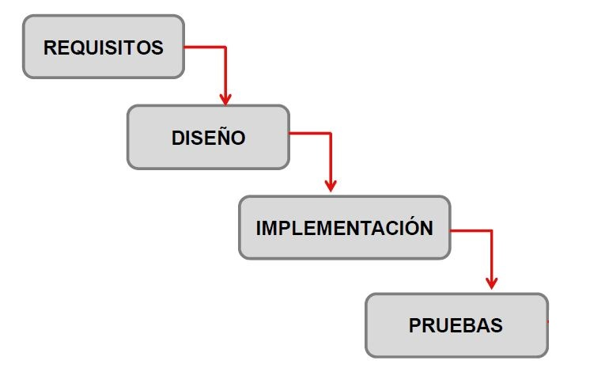
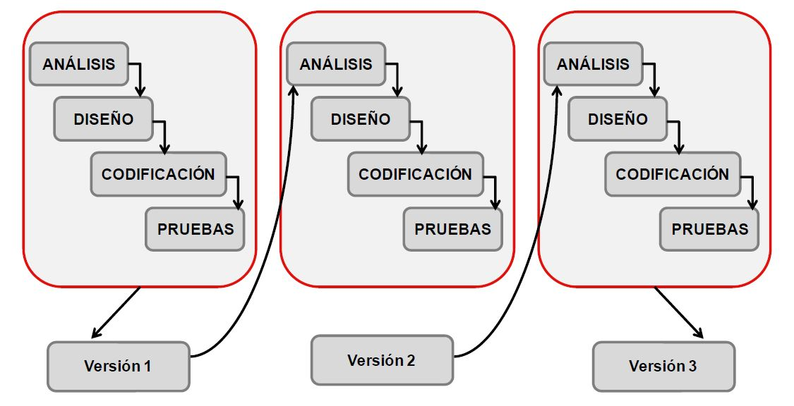
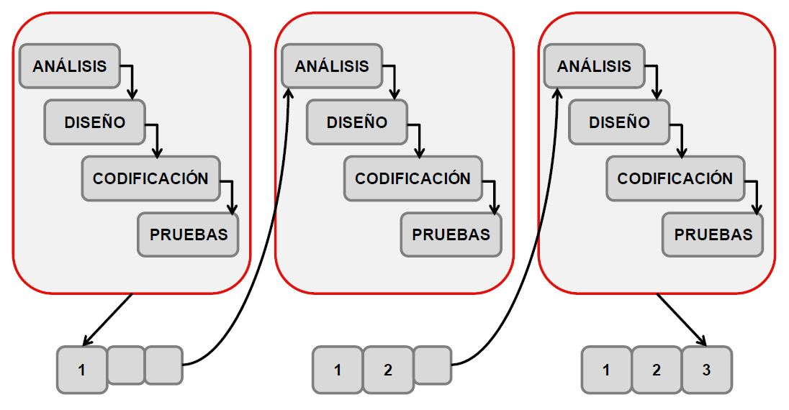

Metodologias de desarrollo de software
I. Modelos generales
1. Cascada:
Ordena cada fase del proceso de desarrollo de software, de forma que el inicio de cada fase, debe esperar a la culminación de la anterior.
2. Iterativo:
Consiste en la iteraciónb> de varias fases de desarrollo de software. Al final de cada iteración se entrega una versión mejorada del software.
3. Incremental:
Se basa en la construcción de una porcion de software. Incrementa la funcionalidad del software en cada iteración que se realiza.
II. Proceso Unificado de Desarollo de Software - PUDS
Marco de desarrollo de software dirigdo por casos de uso
Caracteristicas:
- Iterativo e Incremental
- Dirigido por casos de uso
- Centrado en la arquitectura
- Enfocado en los riesgos
Fases:
| Inicio | Se define el negocio (Analisis de requerimientos), la visión del software, tiempo y costos. |
|---|---|
| Elaboración | Se refina la visión del software (detalla los requierimientos a travez de la elaboración de casos de uso), se evalua los riesgos |
| Construcción | Implementación del software |
| Transición | Pruebas e implantación del software |
III. Programación Extrema (XP)
Es una metodologia enfocada en la adpatabilidad y el cambio de los requisitos durante el desarrollo del software.
Caracteristicas:
- Adaptable a cambios
- Iterativo e incrental
- Trabajo en equipo (programación en parejas)
- Comunicación fluida (Cliente y equipo de desarrollo)
Elementos:
| Historias de usuario | Tecnica utilizada para especificar los requisitos del software |
|---|---|
| Roles |
|
| Proceso |
|
IV. SCRUM
Es un proceso iterativo e incremental para desarrollar y gestionar cualquier proyecto (no necesariamente software).
Caracteristicas:
- Adaptable a cambios
- Iterativo (Sprint) e incrental (incremento del software)
- Basado en reuniones diarias (Planificación y/o revisión de un sprint)
- Organización independiente de equipos
Roles:
- ScrumMaster.- Conoce y dirige los procesos de SCRUM y trabaja junto con el jefe de proyecto.
- Product Owner.- Representa al cliente.
- Team (equipo).- Grupo de programadores.
Practicas:
- Los clientes se convierten en parte del equipo de desarrollo.
- Frecuentes entregables intermedios con funcionalidad. Esto permite al cliente conseguir trabajar con el software antes y permite al proyecto cambiar los requisitos de acuerdo con las necesidades.
- Se desarrollan planes de riesgos y mitigación frecuentes por parte del equipo de desarrollo, la mitigación de riesgos, la monitorización y la gestión de riesgos se lleva a cabo en todas las etapas y con compromiso.
- Transparencia en la planificación y desarrollo de módulos, permitir a cada uno saber quién es responsable de qué y cuándo.
- Frecuentes reuniones de las personas involucradas en el negocio para monitorizar el progreso.
- Los problemas no se barren debajo de la alfombra. Nadie es penalizado por reconocer o describir un problema imprevisto.